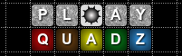

Aard Dictionary
Documentation

Copy!
Dropbox!
Wuala!
Aard Dictionary
»
Documentation
¶
Aard Dictionary
Overview
Keyboard Navigation
Wikipedia Language Link Support
Verifying Dictionary Data Integrity
Article Appearance
User Interface Language
Fonts
Limitations
Installation Notes
Building Mac OS X App
Pre-History
Contributors
Reporting Issues
Changes
Aard Dictionary for Android
Overview
Initiating Lookup from Other Applications
Contributors
Reporting Issues
Aard Tools
Requirements
Installation
Usage
Reporting Issues
Release Notes
Aard Format
Container Format
Article Format
Aard Dictionary
»